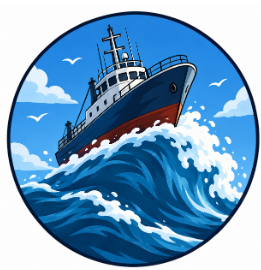

Innovación para un futuro mejor
Conocé nuestro dispositivo tecnológico diseñado para solucionar una problemática en el muelle de pescadores en madryn.
Conocer el producto¿Qué problemática buscamos resolver?
El muelle de pescadores en madryn pasa por problematicas muy dificiles de superar, como la marea alta o la niebla que se genera entonces diseñamos un producto capaz de advertir a los pescadores de estos fenomenos.
Nuestro producto

¿Para Que sirve nuestro Producto?
Nuestro prototipo utiliza tecnología y sensores para detectar situaciones relacionadas con dificultades reales para advertir de estos peligros. Su objetivo es brindar una solución práctica, rápida y eficiente, ayudando a proteger a los pescadores.
Precio del prototipo
Accedé a nuestra tecnología a un precio accesible.
$ 1000.00
Consultar disponibilidadContacto
¿Querés conocer más sobre nuestro proyecto?
Email: ACMP@gmail.com
Ubicación: Patagonia Argentina